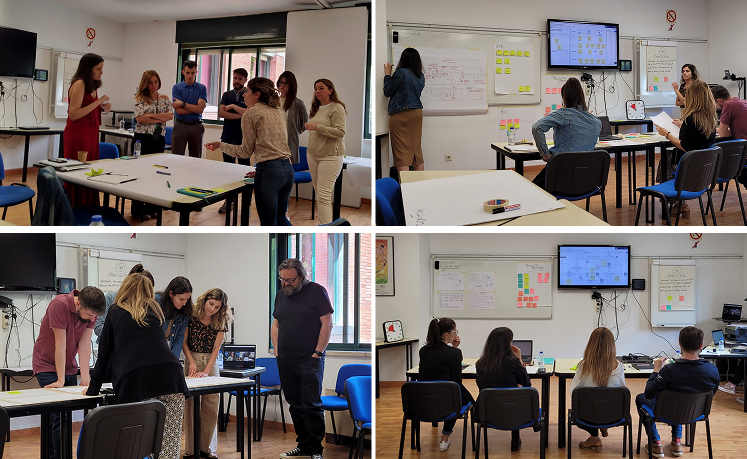
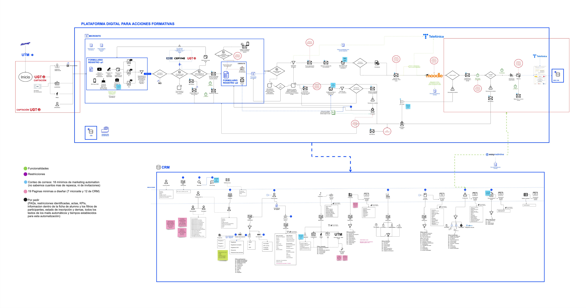
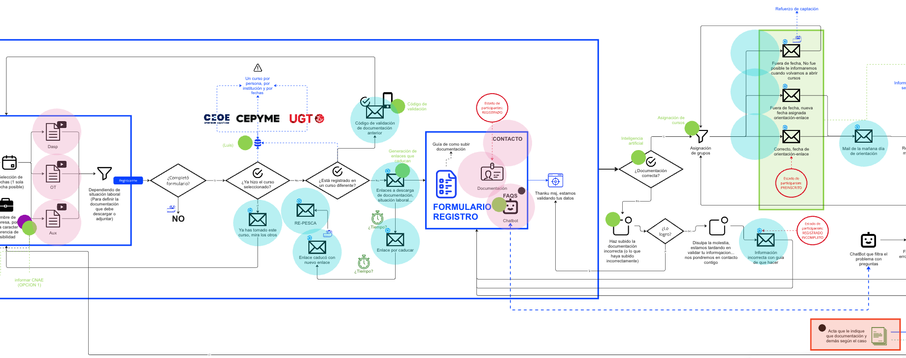
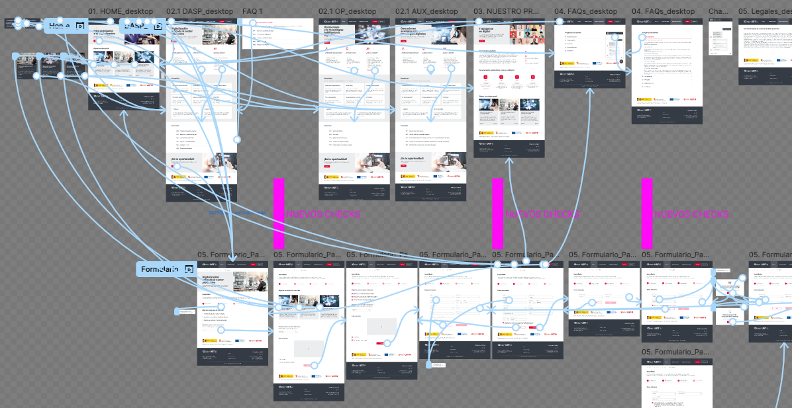
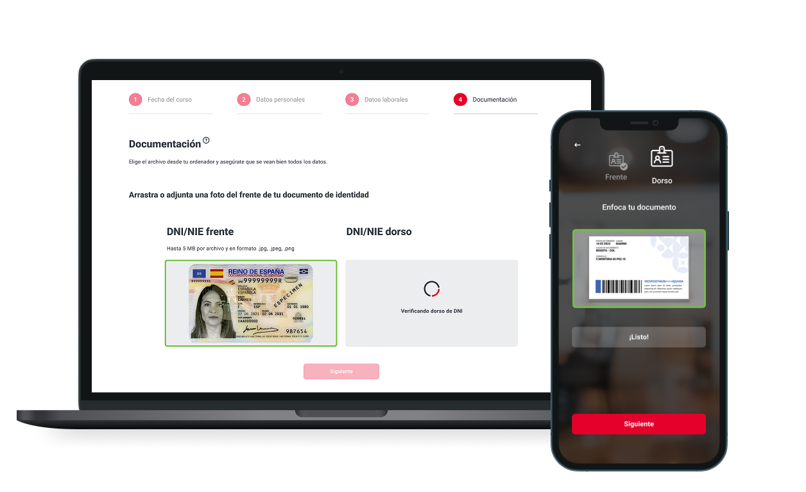

01 — Challenge
The Challenge
UGT needed to completely digitize their union course enrollment process — replacing a slow, paper-heavy manual workflow with an AI-powered, integrated digital system. The existing process took 6+ months to complete for each enrollment cycle and was full of manual verification bottlenecks.

A 3-day discovery workshop helped map all existing processes, legal constraints, and integration requirements before a single screen was designed. The tight 2-month delivery timeline required perfect alignment from day one.
02 — Requirements
Key Project Requirements

- Automated document verification with AI identity validation
- Full CEOE/CEPYME database integration
- Moodle and Telefónica platform connectivity
- Dynamic high-complexity enrollment form with conditional logic
- Trained chatbot for student support and enrollment guidance
- Full document management system
- Dedicated landing page for course discovery
- Custom CRM for enrollment management and reporting
- Full delivery in 2 months
03 — Process
My UX Process
Discovery Workshop (3 days)
Intensive workshop mapping all existing enrollment processes, stakeholder pain points, legal requirements, and integration dependencies.
System & Automation Mapping
Mapped all data flows between UGT, CEOE/CEPYME, Moodle, and Telefónica to define integration architecture.
Automation & AI Design
Designed the AI document verification flow and chatbot conversation architecture for student support.
Complex Form UX Design
Designed the dynamic enrollment form with conditional branching, validation states, and error prevention patterns.
ERP & CRM Development
Designed the custom CRM interface for admin staff to manage enrollments, documents, and communications.
Chatbot Integration & Testing
Designed chatbot flows, tested with real students, iterated on response accuracy and UX clarity.
Rapid Deployment
Full handoff and launch support to deliver the complete system in 2 months from kickoff.


04 — Results
Results and Deliverables
- Fully automated enrollment replacing a 6-month manual process
- Seamless AI identity verification and document processing
- Intuitive UI adopted immediately by staff with minimal training
- Smart chatbot reducing support tickets from day one
- Custom CRM delivering full visibility and control to management
